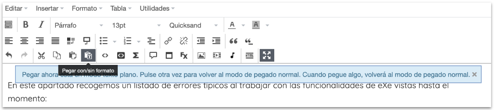
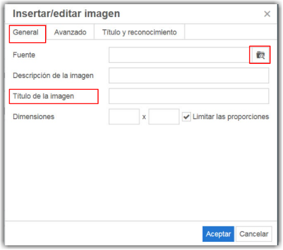
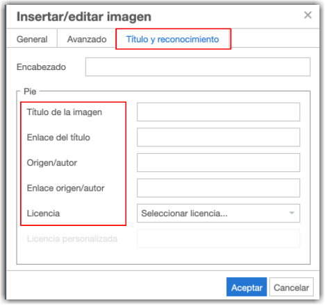
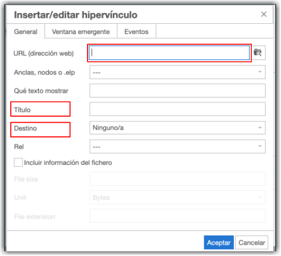

Guía de creación de REA con eXeLearning
1.5. Errores típicos
En este apartado recogemos un listado de errores típicos al trabajar con las funcionalidades de eXe vistas hasta el momento:
- No guardar pensando que se guarda automáticamente.
- Copiar textos con formato de otro lugar y pegarlos en eXe. Esta acción puede arrastrar mucho código que puede dar problemas. Por eso, a partir de la versión 2.6, está activada por defecto la opción "Pegar sin formato". En caso de necesitar pegar formato, podemos desactivarla.

- No rellenar el texto alternativo de las imágenes que insertamos. Debemos rellenar el campo "Descripción de la imagen", incluyendo en él una descripción corta (y real) de la imagen que insertamos. Si no lo introducimos generamos problemas de accesibilidad.

- No rellenar el Reconocimiento de las imágenes o contenido multimedia que insertamos o embebemos. Siempre que utilicemos materiales ajenos debemos referenciarlos y atribuir a su autor, indicando la licencia de los mismos. Recordemos que el fin de los REA es que sean utilizados, difundidos y adaptados por otras personas, por lo que es recomendable que todos los elementos estén debidamente referenciados, incluso si yo soy el autor.

- No rellenar el Título en los enlaces. De nuevo, estaremos creando problemas de accesibilidad si no indicamos en este campo qué va a ocurrir al pinchar en ese enlace, es decir, a dónde se dirige y si se va a abrir en ventana nueva. Si el enlace contiene un texto, y el texto explica suficientemente bien el destino del enlace, no hay problema, pero debemos evitar enlaces del tipo "pincha aquí" para evitar problemas de accesibilidad.

- No rellenar todos los datos básicos de propiedades, lo que dificulta su catalogación y puede provocar errores al publicar el recurso en repositorios. Esto es importante, porque si no rellenamos esos datos, estamos creando un contenido sin título, autor, descripción...

Obra publicada con Licencia Creative Commons Reconocimiento Compartir igual 4.0